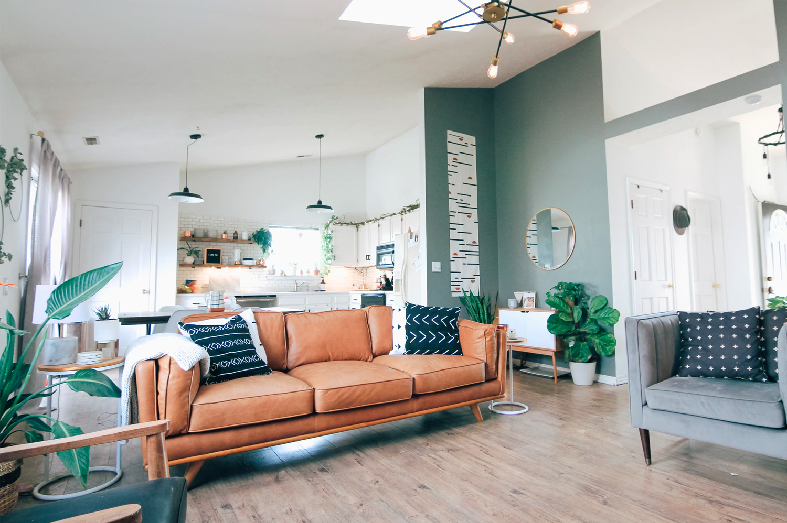

Cerramos los ojos y vemos pasar a muchos adolescentes, jóvenes, docentes, religiosas, padres de familia y vecinos que con entusiasmo, generosidad y voluntad contribuyeron en la construcción de este sueño hecho realidad.

Desde su creación, la institución mostró a la comunidad como un
colegio estatal con convenio puede trabajar y brindar una educación de
calidad y formación en valores. Durante estos 35 años hemos caminado
y caminamos de la mano de dos congregaciones: la Congregación de
las Madres Ursulinas de la Unión Canadiense y la Congregación de las
Hermanas de la Caridad de Santa Ana.
Quienes comparten su carisma
y son base fundamental que nos sostiene día a día.
Ambas nos regalaron
su vocación de servicio y nos acercaron a Dios a través de sus gestos y
de su ejemplo evangelizador.
Somos una institución educativa con convenio que forma estudiantes comprometidos en la construcción de una sociedad justa, en sana convivencia fortalecidos en el amor a Dios y respeto al prójimo.
EMAIL